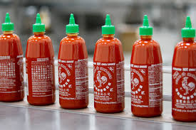

<center>
<table>
<tr>
<td width="600px">

 <p>
 
 </p>
 
<H2>Hipster Daze Sriracha</H2>


<p>
My best memory of sriracha is adding way too much of it to a pho. The sriracha packed a lot of heat , makingand the pho became extremely spicy. But it wasn’t bitter spicy, it was a nice sweet soup. Although sriracha can ruin a lot of dishes it still has a lot of potential.
What sets this apart from most hot sauces is the high amount of sugar. When it comes to classic hot sauces, this is one of the sweetest ones there is. Most hot sauces, are savory sauces that go well on savory dishes. Tapatio adds a nice kick to scrambled eggs. Sriracha is really the opposite; it’s. Its really sweet and it actually has a lot of spice. The problem with Sriracha is that it ruins and overpowers lots of simple savory dishes like breakfast scrambled eggs.

A typical hot sauce is not supposed to be sweet, it’s just supposed to make things taste spicier. The high sugar content in sriracha, makes it clash with lots of savory dishes. The red rooster sauce only belongs on entrees, that don’t taste bad when they’re sweetened. I feel like this goes well on things like pho, or on americanized chinese dishes like X. Although foods like pizza do have lots of sugar in them, they’re still supposed to taste savory rather than sweet, so s. Sriracha is just too sweet to to work on pizzabe appropriate on savory dishes. I would recommend keeping a bottle of this for asian takeout, but nothing else.
</p>

<p>
Sriracha hot sauce has its weaknesses. It can overcomplicate a lot of simple dishes wWhile most hot sauces are made to make things spicier, sriracha is really flavorful. This stuff has a lot of flavor, but sometimes you do not want to have too much flavor.
</p>

<p>
The most important thing to understand about using sriracha is that its a niche hot sauce. Its from thailand, its full of sugar, and it tastes very different from standard american hot sauces. This goes really nicely on a few types of food, but it can ruin a lot of dishes because its really weird.
 </p>

<p><i>
Just be careful.+++++++++++++++++
  </i></p>

</td>
</tr>
</table>
</center>
